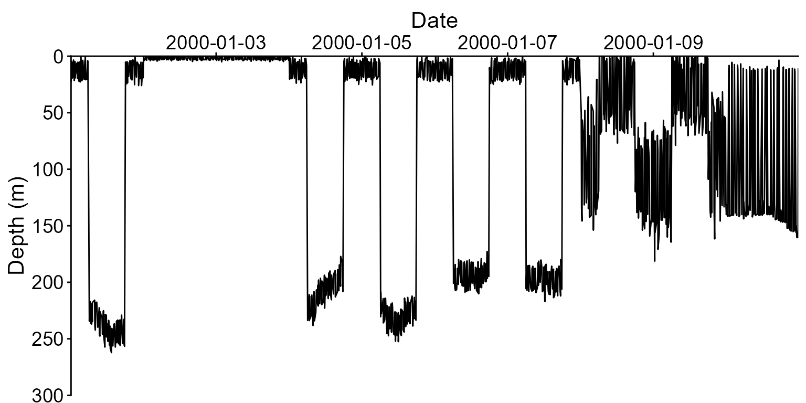

Modern tags can record depth every second for months. A year at 1-second sampling is over 31 million records, and analysing it in full can need more memory than most computers have. This vignette explains where the memory goes, how to estimate it before running anything, and how to reduce it without losing the behaviour you are interested in.
library(FishDiveR)
#> FishDiveR version 1.1.0.9000. Facilitating classification of aquatic animal behaviours from vertical movement data.
#> Type 'citation("FishDiveR")' for citing this R package in publications.
example_folder <- system.file("extdata", package = "FishDiveR")
archive_days <- readRDS(file.path(example_folder, "data", "archive_days.rds"))Where the memory goes
The wavelet analysis is the memory-heavy step. For every record and every period analysed, the wavelet stores a complex coefficient (16 bytes) and the phase, amplitude, power and ridge (8 bytes each): about 48 bytes per record per period.
The number of periods depends only on the wavelet settings: the number of doublings between the lower and upper period, times the sub-octaves, plus one.
n_periods <- function(lower_period_mins, upper_period_hours, suboctaves = 12) {
floor(log2(upper_period_hours * 60 / lower_period_mins) * suboctaves) + 1
}
wavelet_gb <- function(days, sampling_s, lower_period_mins, upper_period_hours = 24, suboctaves = 12) {
records <- days * 86400 / sampling_s
records * n_periods(lower_period_mins, upper_period_hours, suboctaves) * 48 / 1024^3
}
# A 5 minute to 24 hour wavelet with 12 sub-octaves has this many periods
n_periods(5, 24)
#> [1] 99
# Approximate wavelet memory in GB for a few deployments
deployments <- expand.grid(days = c(30, 90, 365), sampling_s = c(1, 5, 15, 60))
deployments$memory_GB <- round(wavelet_gb(deployments$days, deployments$sampling_s, lower_period_mins = 5), 1)
deployments
#> days sampling_s memory_GB
#> 1 30 1 11.5
#> 2 90 1 34.4
#> 3 365 1 139.6
#> 4 30 5 2.3
#> 5 90 5 6.9
#> 6 365 5 27.9
#> 7 30 15 0.8
#> 8 90 15 2.3
#> 9 365 15 9.3
#> 10 30 60 0.2
#> 11 90 60 0.6
#> 12 365 60 2.3R also needs working memory while the wavelet is calculated, so as a rule keep the estimate below about half of your computer’s memory. The app shows this estimate for each tag before running, and warns when it is too high.
There are two ways to reduce it: a longer lower period (fewer periods), or a longer sampling interval (fewer records).
A longer lower period
Each doubling of the lower period removes suboctaves
periods. Going from 5 to 20 minutes removes 24 of the 99 periods, a
quarter of the memory. This is only worthwhile if you don’t need cycles
shorter than the new lower period, e.g. short dives.
Thinning the record
Most of the records in a high-frequency record are not needed by the wavelet. The shortest cycle a record can show is twice its sampling interval, and a cycle is well described by about 20 records. A 5-minute cycle has 300 records at 1-second sampling, but only needs about 20.
thin_archive() averages the record into blocks of a
longer interval. Averaging, rather than keeping every nth record, stops
movements faster than the new interval from appearing as false, slower
cycles (aliasing).
# The example tag is sampled every 60 seconds: thin it to 5 minutes
thinned <- thin_archive(archive_days, interval_s = 300, verbose = TRUE)
#> Thinned from 60 to 300 second sampling: 14,400 to 2,880 records
head(thinned[, c("date", "depth", "date_only")])
#> date depth date_only
#> <POSc> <num> <Date>
#> 1: 2000-01-01 00:00:00 12.14 2000-01-01
#> 2: 2000-01-01 00:05:00 12.68 2000-01-01
#> 3: 2000-01-01 00:10:00 15.10 2000-01-01
#> 4: 2000-01-01 00:15:00 10.44 2000-01-01
#> 5: 2000-01-01 00:20:00 11.94 2000-01-01
#> 6: 2000-01-01 00:25:00 11.70 2000-01-01Depth (and temperature, if present) is averaged over each block. Any other columns keep the value of the block’s first record.
The interval must be a multiple of the current sampling interval and divide a day evenly, so that days stay whole: for example 5, 10, 15, 30, 60, 120 or 300 seconds.
Choosing the interval
Keep at least 20 records per cycle of the wavelet’s lower period:
lower_period_mins <- c(5, 10, 20, 30, 60)
data.frame(lower_period_mins, longest_interval_s = lower_period_mins * 60 / 20)
#> lower_period_mins longest_interval_s
#> 1 5 15
#> 2 10 30
#> 3 20 60
#> 4 30 90
#> 5 60 180So for a 5-minute lower period, thin to 15 seconds or less. A 30-day record at 1-second sampling then needs under 1 GB instead of about 11 GB:
round(c(full = wavelet_gb(30, 1, 5), thinned = wavelet_gb(30, 15, 5)), 1)
#> full thinned
#> 11.5 0.8The app suggests an interval following this rule.
Using the thinned record
Give the thinned record to create_wavelet(), but keep
the full record for the depth statistics: averaging slightly reduces
maximum depths and vertical speeds.
archive_days <- readRDS(file.path(project, "237522", "archive_days.rds"))
# Wavelet from the thinned record
wavelet <- create_wavelet(
archive = thin_archive(archive_days, interval_s = 15),
tag_ID = "237522",
lower_period_mins = 5,
upper_period_hours = 24,
output = TRUE,
output_folder = project
)
create_wavelet_stats(wavelet, tag_ID = "237522", output = TRUE, output_folder = project)
# Depth statistics from the full record
create_depth_stats(archive_days, tag_ID = "237522", diel = TRUE, GPS = gps_file, output = TRUE, output_folder = project)create_wavelet() records the sampling interval it was
given in the tag’s wavelet_meta.rds, and
create_wavelet_stats() uses the wavelet’s own interval to
split it into days.
Keep tags consistent
Wavelet statistics from a thinned record are very close to, but not the same as, those from the full record. Thin all the tags you will cluster together to the same interval. This also makes tags recorded at different rates directly comparable: a 1-second tag and a 15-second tag both thinned to 15 seconds give comparable statistics.
Plotting large records
Plotting millions of points is slow, and a figure a thousand pixels
wide can’t show them anyway. plot_TDR() and
plot_cluster_TDR() have a minmax_bins option
that plots only the shallowest and deepest record in each of that many
time slices. With 2,000 slices, a year at 5-second sampling plots in
about a second, and every dive’s extremes are kept, unlike plotting
every nth record.
tdr <- plot_TDR(
rds_file = "data/archive_days.rds",
data_folder = example_folder,
minmax_bins = 500,
Y_lim = c(0, 300, 50),
date_breaks = "2 day"
)
nrow(tdr)
#> [1] 1000
attr(tdr, "TDR_plot")
The wavelet power spectrum figure made by
create_wavelet() is thinned for drawing in the same spirit,
so long records are drawn in full; the saved wavelet itself is not
changed. To redraw a tag’s figures from its saved wavelet without
recalculating it, use load_existing_wavelet = TRUE:
create_wavelet(
archive = archive_days,
tag_ID = "237522",
load_existing_wavelet = TRUE,
lower_period_mins = 5,
upper_period_hours = 24,
output = TRUE,
output_folder = project
)